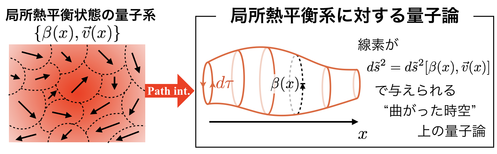
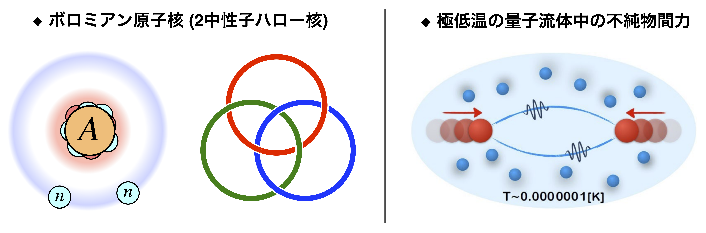
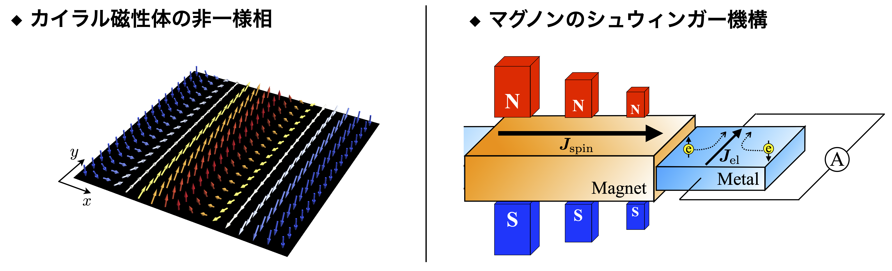

Research Interest (in Japanese)
これまでの研究
主に場の理論の手法を用いて，量子・古典多体系の平衡状態・非平衡状態における様々な性質を調べる研究をしています． 考える物理系を限定して研究をしているわけではないため，クォークやグルーオンなどの素粒子多体系から， 原子核物理・冷却原子系で現れる少数量子系，物性物理におけるスピン系，非平衡統計力学の基礎に関わる研究など， 以下のようなテーマをこれまで研究してきました(個別の研究テーマについて，その概要の一部は以下にまとめてあります)：
- 非平衡統計力学を用いた流体力学の場の量子論的基礎づけ
- 原子核・原子物理の普遍的な性質に関する研究
- 場の理論の手法を用いたスピン系の解析
- クォーク・グルーオン・プラズマ中の輸送現象
現在の興味
最近興味がある研究テーマには以下のようなものがあります：
- 非一様な背景場(電場や化学ポテンシャルや温度の勾配)があるときの場の理論・統計力学
- 核子多体系における異方的超流動とその流体力学
- ホール粘性などのパリティ対称性を破る輸送現象
- 原子核物理・原子物理で現れる複素ポテンシャル(光学ポテンシャルなど)の場の理論的な基礎づけ
- くりこみ群に基づいた低エネルギー有効理論(たとえば，ゆらぐ流体力学)の導出と解析
- その他，ガラス，乱流，拡がった物体に関する場の理論など
非平衡統計力学を用いた流体力学の場の量子論的基礎づけ
| 背景 | 従来，流体方程式はボルツマン方程式などの運動学的手法から導出されることが多かったが，その取り扱いは希薄ガスのような弱結合系にのみ適用可能で， クォーク・グルーオン・プラズマや強相関電子系などの強結合系には適用できない． そこで，結合の強弱に関わらず適用可能な「非平衡統計力学の手法」を用いて， 流体力学を場の量子論に基づいて基礎づける方法を模索した． |
| 結果 | 非平衡統計力学の手法に加えて場の理論を記述する幾何学的な手法を用いることで， ナビエ・ストークス方程式の場の量子論に基づいた導出法を明らかにした． 具体的には，くりこまれた摂動理論(最適化された摂動理論)の考え方を非平衡統計力学のに適用することで， 局所熱平衡状態にある量子多体系が示す非散逸的な輸送， 局所熱平衡状態からのズレが記述する散逸的な項を分離して取り扱えることを示し， それぞれを微分展開の範囲で評価することで流体方程式が導出された． また，局所熱平衡状態にある量子多体系が「曲がった時空(虚時間+空間)上の量子論」として 幾何学的に記述できること(さらに，相対論的な系では対応する時空が重力理論におけるカルツァ・クラインゲージ対称性を有すること)が示され， この幾何学的性質が非散逸的な輸送現象を導出する基礎となった． 局所熱平衡状態に関するこの結果は，大域熱平衡系に対する松原形式の量子論(虚時間形式の経路積分法)を拡張したものになっており， カイラルアノマリーに起因する特異な輸送現象を記述する基礎も与えている． |
| 要点 |
・場の量子論に基づいて，相互作用の強弱によらない相対論的流体力学の導出法が与えられた． ・幾何学的概念を用いることで(非散逸性の)輸送現象を見通し良く導出する方法が明らかになった． |
| 出版 |
[相対論的流体]
PRD (2015),
Ann. Phys. (2017),
Particle (2019) [非相対論的流体] JSP (2019) [MHD] JHEP (2021), Symmetry (2022) [純粋状態に基づく定式化と数値計算] PRR (2022) |

原子核・原子物理の普遍的な性質に関する研究
| 背景 |
原子核の中には，中性子を過剰に持った中性子過剰核において，ハロー原子核と
呼ばれる特徴的な構造が現れることが知られている．
とくに，原子核の構成要素がコア原子核と2つの中性子の有効的な3体系で記述されるとき，
どの2つの部分系も束縛しないのに，3体系として束縛するというボロミアン原子核と呼ばれる
エキゾチックなハロー原子核が存在する．
このようなエキゾチックな原子核について，普遍的な性質が存在するかはわかっていない状況にあった．
また，近年のレーザー技術の進歩により，原子の集団を数十ナノケルビン程度の極低温まで冷やすことが可能になり， 超流動状態という対称性が自発的に破れた相を冷却原子系で高精度で制御できるようになってきた． このとき，超流動流体中に不純物を2つ浮かべたときに働く力は，原子核に働く核力を理解するために導入された 湯川ポテンシャルになることが理論的に予想されていたが，これが真の長距離力となるかは明瞭ではなかった． |
| 結果 |
有効場の理論に基づいた計算を行うことで，それぞれの問題についての普遍的な側面を明らかにした． (i) 弱く束縛したボロミアン原子核については，核子の散乱データなどからコア原子核と2つの中性子をそれぞれ点粒子として 扱う近似的な取り扱いが可能なことがわかる． そこで，有効的な量子3体問題を扱う有効場の理論を構築し，構築された理論に基づいて原子核の分布や励起スペクトルについて解析した． その結果，ボロミアン原子核の内部構造や励起スペクトルについて， その束縛エネルギーと中性子間のs波散乱長の2つのパラメータによって記述される普遍的なふるまいがあることがわかった． (ii) 超流動状態の量子流体について，そのマクロなふるまいは超流動フォノンと呼ばれる音波によって記述されることを示すことができる． この点に注目して，超流動フォノンと不純物のダイナミクスを記述する有効場理論を用いて，不純物間ポテンシャルの長距離でのふるまいを調べた． その結果，長距離では超流動フォノンを2つ交換するプロセスに支配されることがわかり，超流動流体中の不純物間ポテンシャルは 長距離で普遍的にファン・デル・ワールス力で与えられることを示した． |
| 要点 |
・弱く束縛したボロミアン原子核について，構造と励起に関する普遍的な特徴を明らかにした． ・超流動流体中に浮かべた不純物には，長距離でファン・デル・ワールス力が働くことを明らかにした． |
| 出版 |
[ハロー原子核]
PRL (2022a),
arXiv (2025)
[冷却原子中の不純物間力] PRL (2022b), PRA (2024) |

場の理論の手法を用いたスピン系の解析
| 背景 | 格子スピン系のマクロなふるまいは，その低エネルギー有効理論に当たる有効場の理論により記述される． 具体的には，スピンがほとんど揃っているような状態は，非線形シグマ模型と呼ばれる有効場の理論を用いて解析できる側面があることが知られている． そこで，スピン系やその一般化に対応する特別なモデルについて，摂動展開で捉えることがむずかしい非摂動的な性質も含めて， 場の理論の手法に基づいて解析することを試みた． |
| 結果 | スピン系とその一般化にあたるモデルについて，非摂動的な性質も含めて，非線形シグマ模型と呼ばれる 低エネルギー有効場の理論を用いて，以下の研究を行った： (i) Dzyaloshinskii-Moriya相互作用を含むカイラル磁性体を有効場の理論で記述する方法を明らかにし， インスタントン解や非一様な基底状態まわりのNambu-Goldstoneモード(NGモード)のふるまい， 反強磁性体・フェリ磁性体に非一様な外部磁場を印加することにより誘起されるマグノンの粒子対生成(Schwinger効果)を解析した． (ii)スピン系とその一般化を記述する非線形シグマ模型について， Lieb-Schultz-Mattis定理の場の理論的な現れである’t Hooftアノマリーの同定や 希薄インスタントン近似に基づいた半古典解析などを行った． |
| 要点 |
・カイラル磁性体を有効場の理論により解析する方法を明らかにし，その様々な応用例を示した． ・スピン系とその一般化に当たる非線形シグマ模型の非摂動的性質を，場の理論の手法を用いて明らかにした． |
| 出版 |
[’t Hooftアノマリーと半古典解析]
JHEP (2019),
PRB (2020b) [カイラル磁性体] PRB (2020a), PRB (2021) |
